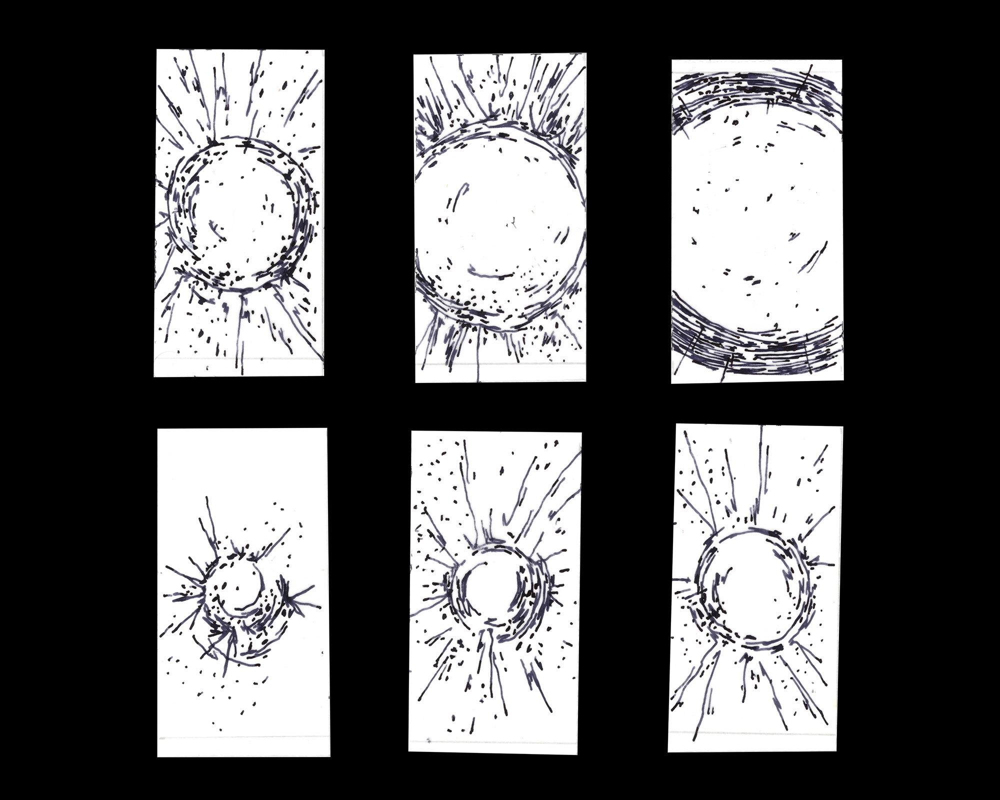
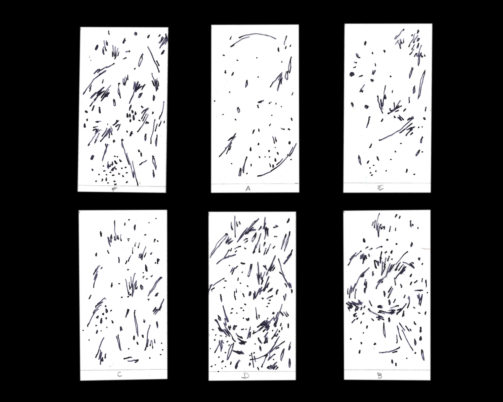
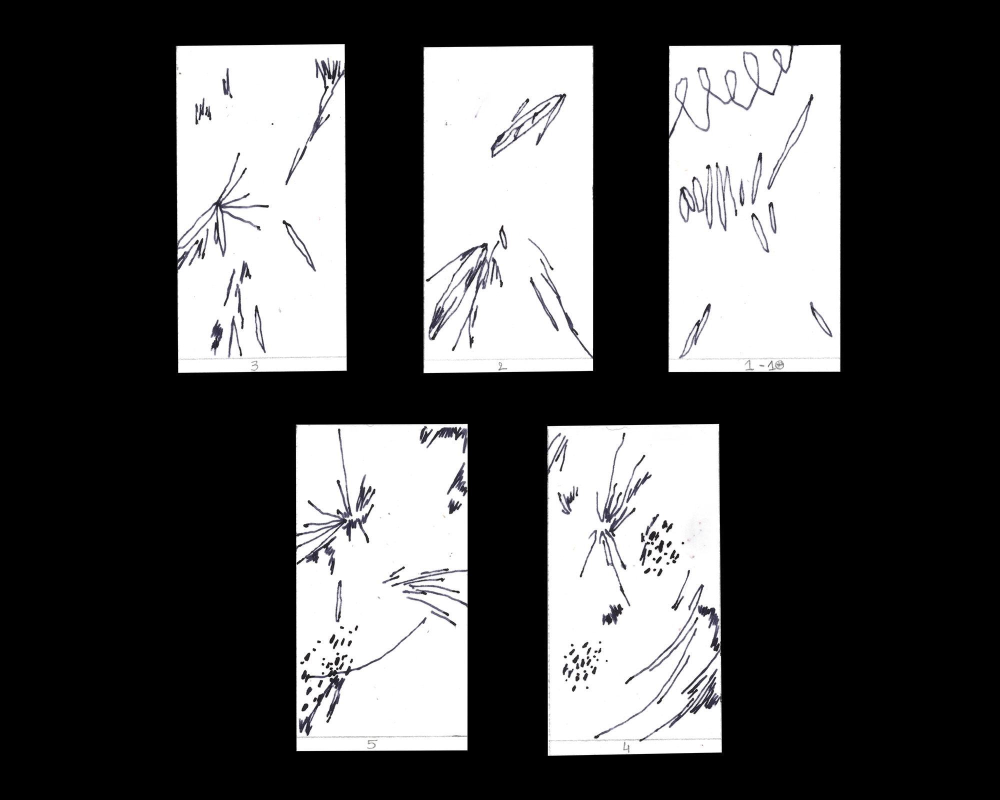
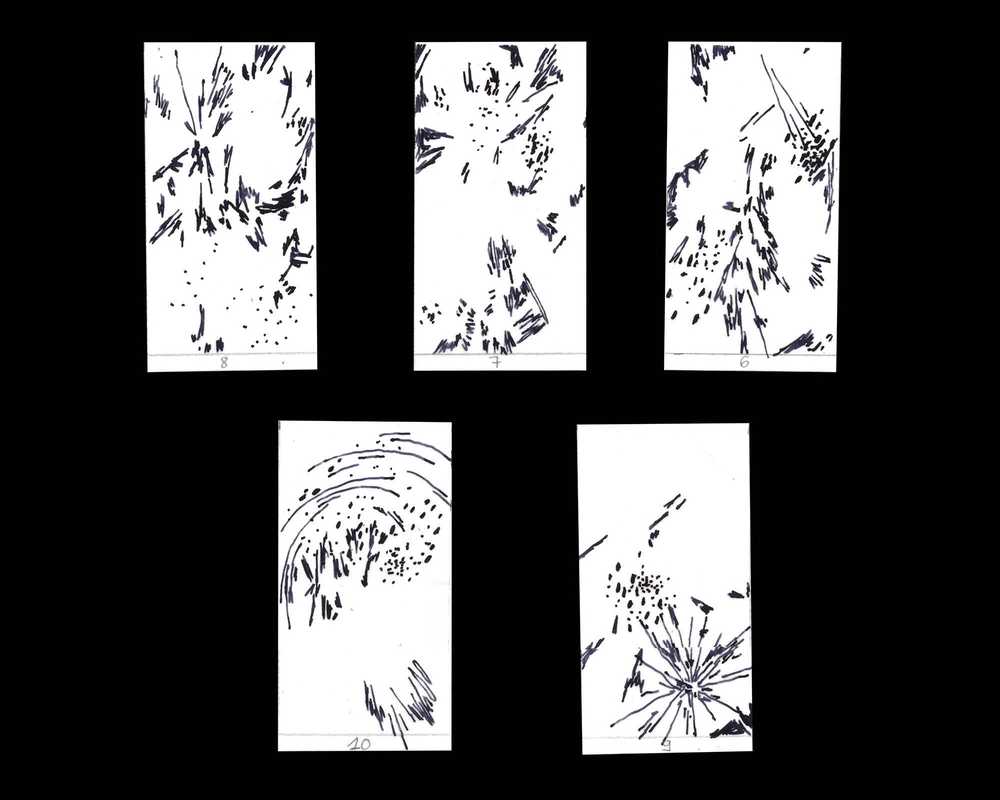

2025
Créer une animation en lien avec l'exposition «Apocalypse. Hier et demain»
qui prend place
à la BnF de février à juin 2025. «Le message de l’Apocalypse,
tout en ambivalence, réside
peut-être dans la manière singulière dont elle nous inscrit dans le temps: l’apocalypse
est un arrière-plan et un horizon: elle nous invite à nous souvenir de l’avenir». Des dessins
synaptiques
et des fragments d'images traduisent cette tentative de se souvenir.
Logiciel: After Effects
Format: 9:16



